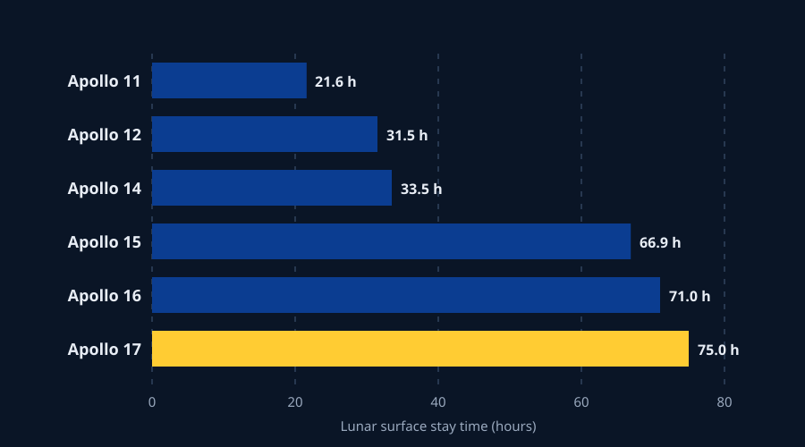

Story Frame
Claim: Apollo's successful lunar landings expanded the time and material collected on the lunar surface as the program progressed: from roughly 21.6 hours on Apollo 11 to 75 hours on Apollo 17, alongside growth in EVA time and returned sample mass.
That change matter because the Moon was not treated as a one time destination. NASA's own historical summaries describe the latter missions as increasingly configured for long-distance surface traverses and larger scientific payloads. The first three landings were walking missions; Apollo 15 introduced the Lunar Roving Vehicle, and the final three missions used it to reach farther beyond the landing site.
Methods & source note: This page uses NASA mission-history and Planetary Data System summaries for the six Apollo missions that landed crews on the Moon. Values are reported in the units used by those sources and normalized only for display: hours and decimal hours where noted, EVA duration is converted from hours/minutes to decimal hours, and sample mass is shown in kilograms. No derived cause and effect relationship is assigned to these fields.
Editorial Figures


Six landing missions, one widening surface footprint
| Mission | Launch year | Surface duration | EVAs | EVA time (hours) | Surface samples returned (kgs) |
|---|---|---|---|---|---|
| Apollo 11 | 1969 | 21.6 | 1 | 2.53 | 21.5 |
| Apollo 12 | 1969 | 31.5 | 2 | 7.75 | 34.3 |
| Apollo 14 | 1971 | 33.5 | 2 | 9.38 | 42.8 |
| Apollo 15 | 1971 | 66.9 | 3 | 18.58 | 77.31 |
| Apollo 16 | 1972 | 71.0 | 3 | 20.23 | 95.71 |
| Apollo 17 | 1972 | 75.0 | 3 | 22.07 | 110.5 |
Table source: NASA Planetary Data System summaries for Apollo 12, 14, 15, 16 and 17; NASA Apollo 11 mission/history sources for Apollo 11 surface time and EVA duration. Sample mass for Apollo 11 is from NASA Science (about 21.5 kg). Rounded display values are calculated from source hour/minute figures; no source observation is changed.
The visual pattern: surface time more than tripled
The chart below turns the data into a clear visual pattern, showing how the lunar surface stay time increased significantly across the Apollo missions. The visualization is a standalone responsive SVG embedded as an image.

What the data says
The Apollo surface operations became longer and more productive in terms of returned sample mass across the successful landings. NASA's historical record also ties the last three missions to the development of the Lunar Roving Vehicle (LRV), which allowed astronauts to travel farther from the lunar module and conduct more extensive surface work.
Design system extension
The Module 1 vocabulary remains the foundation: --color-text, --color-surface, --color-action, --color-accent, --color-muted,
--color-border, spacing, radius, and the readable measure are retained for consistency with the overall design system.
Documentation
Linked sources
- NASA Apollo 11 Mission Overview
- NASA The Apollo Lunar Surface Journal and Apollo Flight Journal
- NASA Planetary Data System mission catalog (Apollo 12, 14, 15, 16, 17)
- NASA JSC — Lunar Sample Curation (sample masses)
- NASA Apollo sample collection summary
- NASA Image and Video Library — AS11-40-5874
- NASA Image and Video Library — AS17-147-22526
Asset credits & license note
Both editorial figures use NASA Image and Video Library assets, identified by their NASA photo IDs. NASA's public-use guidance applies to U.S. government works unless an asset is otherwise marked.
Data transformation
No observations were fabricated or silently altered. Source EVA durations written as hours/minutes are converted to decimal hours for comparison. Sample masses stay in source-reported kilograms with display rounding only; Apollo 16 uses NASA's corrected value of 95.71 kg.
AI Disclosure
No AI was used.